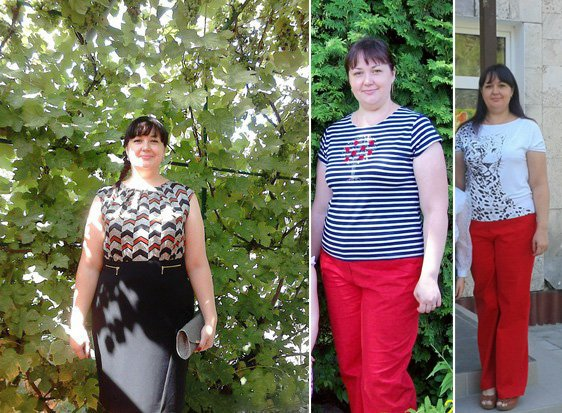
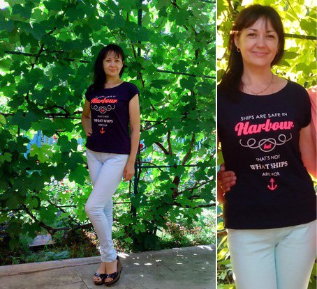

Nigdy nie jest za późno, aby schudnąć!
To historia o jak
wyszczuplałam i odmłodniałam
Nie jestem z tych, którzy martwią się o styl życia bez powodu. Nie interesowałam się tematem zdrowego odżywiania, a już zwłaszcza nie słyszałam nic o , zanim nie ukończyłam 37 lat. Wtedy też zaczęłam mieć problemy z nadciśnieniem i zaczęłam coraz szybciej tracić zdrowie. Do tego stopnia, że do południa byłam już kompletnie wyczerpana. Po wielu wizytach u lekarzy, którzy nie byli w stanie mi pomóc, trafiłam wreszcie do kardiologa który kazał mi udać się do dietetyka. To odmieniło moje życie. Dowiedziałam się, że powinnam chudnąć 30 kilo które nabrałam z powodu jedzenia fast foodów. Od tamtej pory moim celem stała się zdrowa dieta połączona z ćwiczeniami.

W rzeczywistości jednak okazało się to niemal niemożliwe. Zdrowe jedzenie smakowało dla mnie jak papier. Jednak musiałam stracić na wadze, więc zaczęłam głodówkę. Osłabienie i zawroty głowy nie pozwoliły mi pracować nad sobą. A co więcej utrudniały mi codzienne życie.
Ponownie udałam się do lekarza. Chociaż bardzo się starałam, nie byłam w stanie zastosować się do jego zaleceń. Więc polecił mi żebym zaczęła brać suplement, który pomoże mi stracić na wadze bez ścisłej diety i tym samym poprawić zdrowie. Mówił o . Byłam wtedy gotowa spróbować wszystkiego, dlatego od razu je zamówiłam na stronie producenta: oficjalna strona
Zaparzyłam je w gorącej wodzie i w zasadzie zrobiłam z nich herbatę.

Wywołały u mnie następujące zmiany:
W ciągu 4 tygodnie mogłam zacząć kontrolować mój apetyt i stopniowo odstawiać fast foody, zmieniając je na zdrową dietę. Ciśnienie krwi wróciło do normy. Czułam się młoda i pełna życia. Zaczęłam chodzić na siłownię i na basen, straciłam 28 kg!
Kilka miesięcy później znajomi nie mogli mnie poznać! To była prawdziwa przyjemność, zmienić się z grubej czterdziechy (prawie!) w szczupłą ślicznotkę. Codziennie w lustrze dostrzegałam kolejne, wspaniałe zmiany. A moje postępy cały czas udowadniała spadająca waga.

Zainspirowana tymi zmianami, zaczęłam przekonywać moją rodzinę do zdrowego trybu życia z . Ostatnie badanie poziomu cukru we krwi mojego męża pokazało, że wraca do normy! A całe życie był przecież zagrożony cukrzycą. Naturalnie, żadne z nas nie ma teraz zamiaru wracać do starych nawyków! Rozpoczęcie nowego zdrowego życia okazało się bardzo proste! Dzięki mojemu lekarzowi i ! Obawiam się, że bez nich by mi się nie udało!
Jako, że wiem o różnych podróbkach, wolę zawsze kupować na oficjalnej stronie producenta: oficjalna strona
To super, że nakłoniłaś całą rodzinę do zdrowego jedzenia! Nie lubię fast foodów, ale moja rodzina za nimi przepada! Spróbuję podążyć Twoim śladem!!!
Dzięki za historię! Czytałam o dawno temu, ale nigdy się nie zdecydowałam. Ja też nie jestem wystarczająco twarda żeby sama schudnąć a bardzo bym chciała! Także mam nadzieje, że mi pomogą!
Nie spodziewam się, że pastylki będą czynić cuda. Od razu mi powiedziano, że działają najlepiej w połączeniu z ćwiczeniami i dietą. Jednak, są świetne w tłumieniu głodu. To prawda! Na początku próbowałam samych i proces chudnięcia był dość powolny. Potem zaczęłam słuchać swojego ciała i szybko zorientowałam się, że mogę zrezygnować ze słodyczy, smażonych potraw i podjadania. Teraz już jem lżej i zdrowiej, dzięki czemu w sześć miesięcy zgubiłam 4 rozmiary.
Gdzie mogę zamówić ? Bardzo pilnie ich potrzebuję!!!
Tutaj: ( oficjalna strona ) sama stąd zamówiłam i przysłali je bardzo szybko, także jestem zadowolona.
Jadłam przez trzy miesiące i straciłam 25 kilo! Jestem zachwycona! Polecam ją wszystkim!
to jest niedroga i skuteczna metoda na poprawę swojego zdrowia! Robię sobie dietę z dwa razy do roku, żeby poprawić metabolizm i dostarczyć ciału więcej witamin!